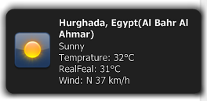

SnarlNetworkBridge is a java implementation of the SNP protocol for Snarl.
It currently supports Registration of alert classes, IconUrls(only http) and action callbacks.
It is completely written in Java which means it is platform independent, you can send SnarlNotifications from a Linux or Mac system on Java 32bit and Java 64bit.

Supported Features
- Registration of notification classes
- Feedback if Snarl is Running
- Sending notifications
- Callbacks Rightclick,Lefclick,Closing,Timeout
- Icons(currently only hosted on a http server)
- Remote Hosts
- Unregistration
- 32/64bit
Changes
SNP1.1 v3
-
Fixed missing application name in Notification
SNP1.1 v2
- Solved an error which leaded the program to crash if Snarl is quit ###SNP1.1 v1
- fixed a bug which prevented registration of Snarl classes ###SNP v1.1
- Action listener like handling of user actions
SNP1.1 rc1
- Renamed some enumerations
- SVN version now supports SNP 1.1
- Getting the user action( clicked etc)
- added support for iconUrl
Downlaod
The Jar file can be downloaded here
Doc
Javadoc can be found here